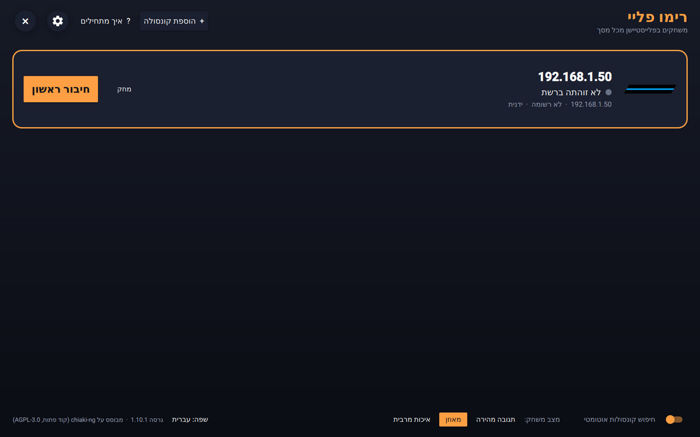

macOSמחשבי מק עם שבב Apple (M1 ומעלה)הורדה למק
WindowsWindows 10 ו-11, 64 ביטהורדה ל-Windows
Androidקובץ APK להתקנה ישירההורדה לאנדרואיד
כל הגרסאות נמצאות גם בדף הגרסאות ב-GitHub. גרסת האנדרואיד פועלת ברשת הביתית בלבד.
הערות להתקנה
macOS
נדרש macOS 15 ומעלה. בפתיחה הראשונה המק יחסום את האפליקציה כי היא לא חתומה אצל אפל: פתחו הגדרות המערכת ← פרטיות ואבטחה, ולחצו "פתח בכל זאת".
Windows
אם מופיע חלון כחול של SmartScreen, לחצו "מידע נוסף" ואז "הפעל בכל זאת".
Android
פתחו את קובץ ה-APK ואשרו התקנה ממקור לא מוכר כשהטלפון מבקש.
כך זה נראה

מה יש באפליקציה
עברית מלאה
ממשק מימין לשמאל כברירת מחדל, עם מעבר לאנגלית בלחיצה.
חיבור לחשבון PSN
רישום אוטומטי של הקונסולה, ומשחק גם מחוץ לבית.
מצבי משחק
תגובה מהירה, מאוזן או איכות מרבית, בלחיצה אחת.
שלטי DualSense ו-DualShock 4
בכבל USB או ב-Bluetooth, כולל רטט וטריגרים.
עד 1080p ו-60 פריימים
כולל HDR ושליטה ידנית בקצב הנתונים.
קוד פתוח
בלי פרסומות ובלי רכישות בתוך האפליקציה.
איך מתחילים
- בפלייסטיישן 5: הגדרות ← מערכת ← Remote Play ← הפעל Remote Play.
- ודאו שהקונסולה והמכשיר מחוברים לאותה רשת ביתית. הקונסולה תופיע באפליקציה לבד.
- לחצו על "חיבור ראשון" והתחברו לחשבון ה-PSN שלכם.
- חברו שלט ולחצו "שחק".